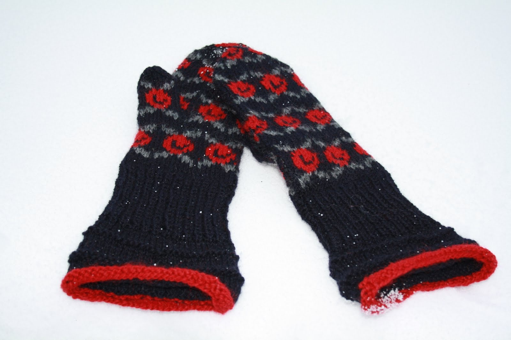
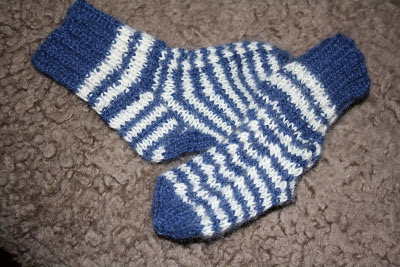
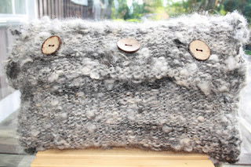

Ull mössa med röd och svart mönster stickad i storlek 68
Eget spunnet garn från Gotlandsfår
Stickar Ull Mössa
Ull mössa med röd och svart mönster

Röda mönstrade stickade vinter vantar
Varma Vintervantar sickade med eget spunnet garn från Gotlandsfår
Storlek 6
Dessa går utmärkt att få rena i ulltvätt
Vinter vantar ULL
Varma vantar stickade i mönstrat ull med spunnet garn

Stickade vantar
Vantar stickade i 2st olika garn, ett från Gotlandsfår och ett från smålandsbaggar
Dessa vantar är varma och sköna på vintern
Storlek 7
Maskintvätt kallt program utan centrifug.
Stickade Ull vantar
Vinter vantar stickade med ull från gotlandsfår

En Ull kudde
Denna Ullkudde är gjord av ett grått garn från Gotlandsbaggarna i Roma
Här finner du även egentillverkade knappar av Ek
Storlek: 50x30cm